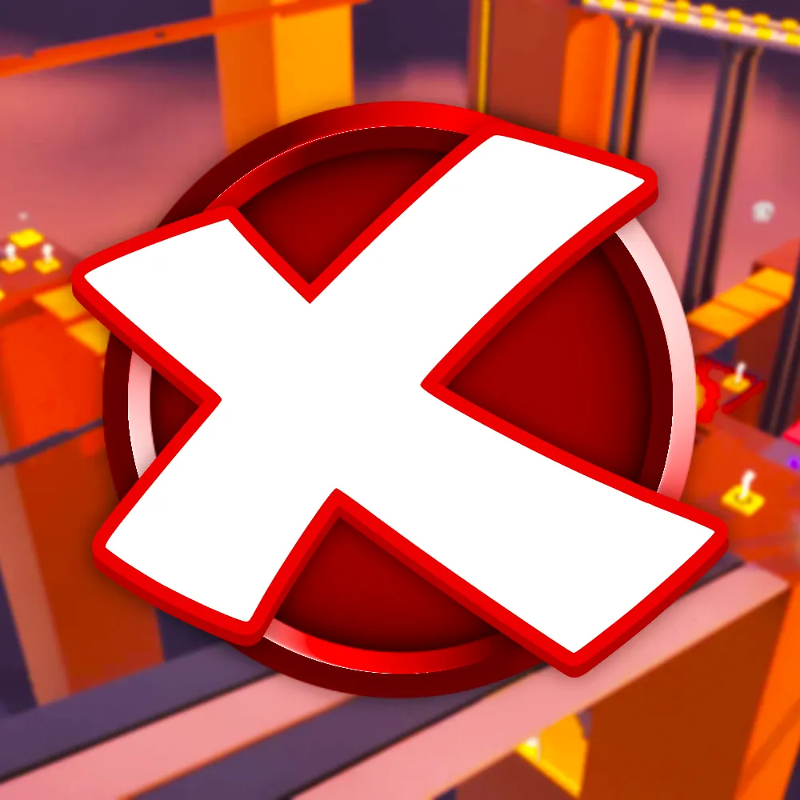
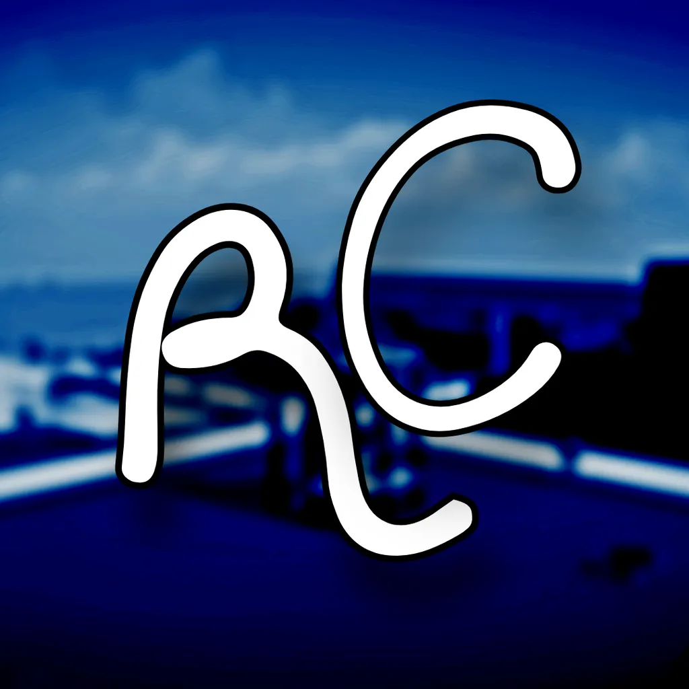

Project X is a 2016-2018 revival that allows you to play various old clients. Availabe on PC and Mobile.



placeholder (idk what to put here YET)

Novetus is a 2007-2012 revival that has been a long-standing part of the revival community and has been there for quite a while - over time it has been updated with new features that solidify its place in this community.
Mercury 2 is the successor to the original Mercury 1 from 2021. Provides an enhanced experience in comparison to its predecessor whilst using the classic 2013 client. Currently in private beta.

Finobe is an revival that brings retro and fun. Playable on PC. Unfortunately this is not the original Finobe by Raymonf.
If you have any complaints or feedback, you can contact us via:
Email: contact@alper.boo
Discord: @alpersocial